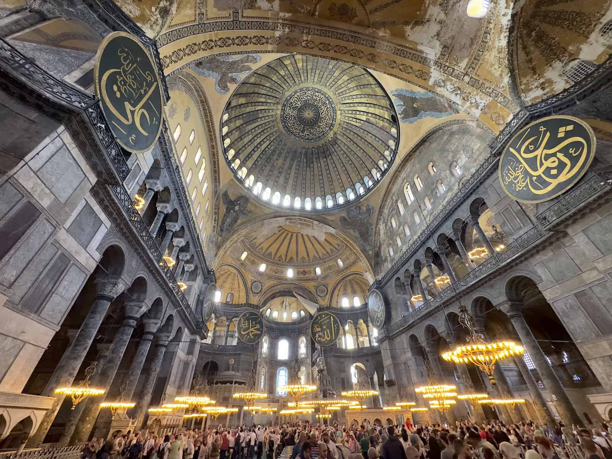
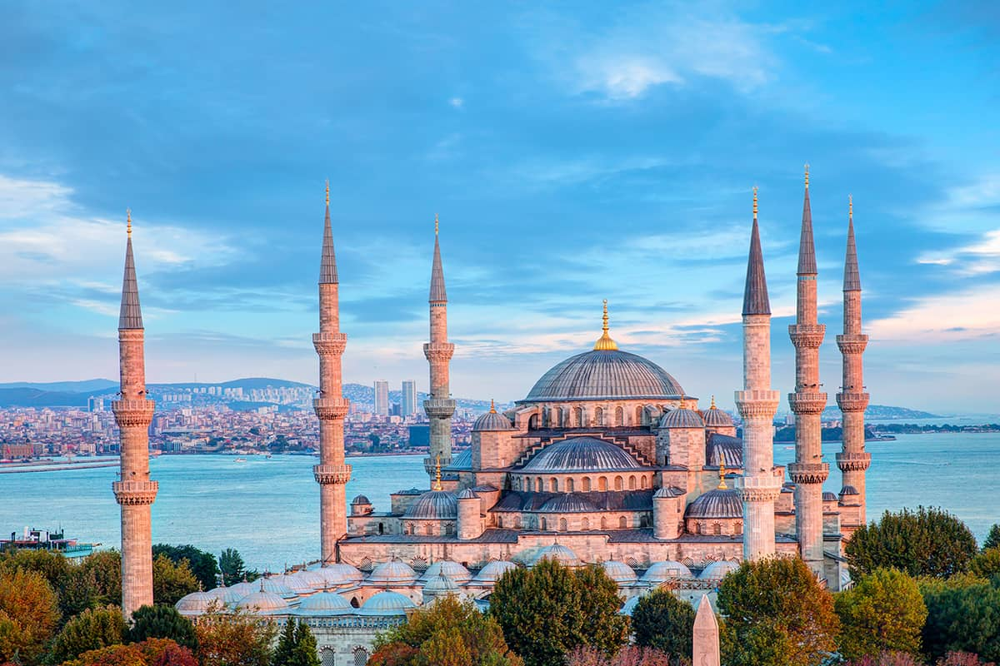
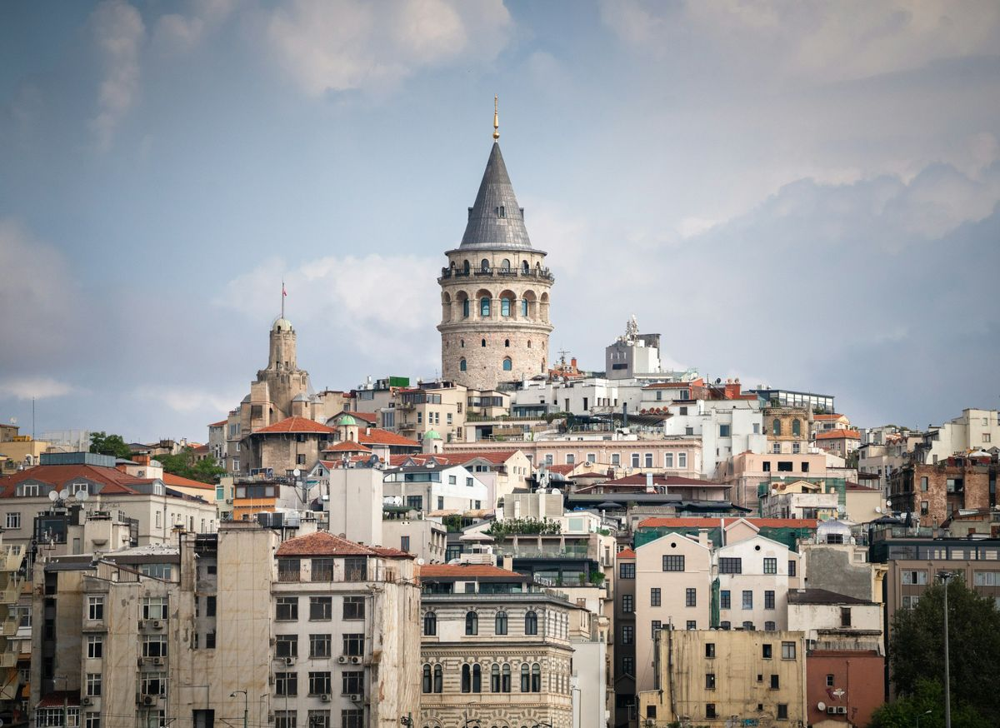

Top attractions in Istanbul
Three key landmarks for a simple and focused visitor plan.

Hagia Sophia
Hagia Sophia is one of Istanbul’s most famous landmarks, recognised for its historical importance and
impressive architecture. Many visitors explore the area early in the day to enjoy a calmer atmosphere.
- Best for: Culture, history, architecture
- Time needed: Around 60–90 minutes
- Visitor tip: Visit early to avoid crowds and take better photos.

Blue Mosque
The Blue Mosque is an iconic religious site known for its domes and elegant interior design. It is an
active place of worship, so visitors should check opening access around prayer times.
- Best for: Architecture, cultural experience
- Time needed: Around 45–75 minutes
- Visitor tip: Dress respectfully and visit outside prayer times.

Galata Tower
Galata Tower is a popular viewpoint for enjoying panoramic city views. The surrounding area is also
good for walking, cafés, and exploring the modern side of Istanbul.
- Best for: City views, photography
- Time needed: Around 45–60 minutes
- Visitor tip: Late afternoon offers great lighting for skyline photos.
Simple half-day route (focused plan)
This quick route keeps travel time low and supports first-time visitors with a clear structure.
- Start: Hagia Sophia (morning)
- Next: Blue Mosque (short walk away)
- Finish: Galata Tower (afternoon for views)
Tip: This page uses only three images intentionally to keep the layout clean and aligned with the image plan.